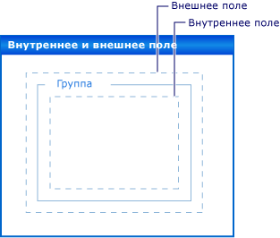

Пошаговое руководство. Создание структуры элементов управления Windows Forms с помощью свойств Padding, Margins и AutoSize
Точное расположение элементов управления на форме является важным для многих приложений. Конструктор Windows Forms предоставляет множество средств форматирования для выполнения этой задачи. Три наиболее важными являются Margin, Padding, и AutoSize свойства, которые присутствуют на все элементы управления Windows Forms.
Свойство Margin определяет поле вокруг элемента управления, благодаря которому обеспечивается определенное расстояние между границами этого элемента и другими элементами.
Свойство Padding определяет поле внутри элемента управления, благодаря которому обеспечивается определенное расстояние между содержимым элемента управления (например, значением свойства Text) и его границами.
На рисунке ниже демонстрируется значение свойств Padding и Margin элемента управления.

AutoSize Свойство сообщает автоматическое изменение размера к содержимому элемента управления. Его размер не будет превышать исходного значения Size . оно будет учитывать значение его Padding свойство.
В данном пошаговом руководстве представлены следующие задачи.
Создание проекта Windows Forms
Установка полей для элементов управления
Установка заполнения элементов управления
Автоматического изменения размеров элементов управления
После завершения вы будете понимать роль, которую играют эти важные функции макета.
Note
Отображаемые диалоговые окна и команды меню могут отличаться от описанных в справке в зависимости от текущих параметров или выпуска. Чтобы изменить параметры, выберите в меню Сервис пункт Импорт и экспорт параметров . Дополнительные сведения см. в разделе Персонализация интегрированной среды разработки Visual Studio.
Предварительные требования
Для выполнения данного пошагового руководства требуется:
- Разрешения, необходимые для создания и выполнения проектов приложений Windows Forms на компьютере, на котором установлена Visual Studio.
Создание проекта
Первым шагом является создание проекта и настройка формы.
Создание проекта
Создание приложения Windows проект с именем
LayoutExample. Дополнительные сведения см. в разделе Как Создайте проект приложения Windows Forms .Выберите форму в конструктор Windows Forms.
Установка полей для элементов управления
Можно задать значение по умолчанию расстояние между элементами управления с помощью Margin свойство. При перемещении элемента управления как можно ближе к другому элементу управления, вы увидите линии привязки, показывающий поля для двух элементов управления. Элемент управления, который вы перемещаете будет привязан к расстояние, определяемое поля.
Размещение элементов управления на форме с помощью свойства полей
Перетащите два Button управляет из элементов на форму.
Выберите один из Button управляет и переместите его к другому, пока они обращаются к почти.
Наблюдайте за привязки между ними. Это расстояние складывается из двух элементов управления Margin значения. Элемент управления, который вы перемещаете привязывается это расстояние. Дополнительные сведения см. в разделе Пошаговое руководство: Упорядочение элементов управления в Windows Forms с помощью линий привязки.
Изменение Margin свойство одного из элементов управления, развернув Margin запись в свойства и установив All до 20.
Выберите один из Button управляет и переместите его к другому.
Линии привязки определение суммы значений полей длиннее и элемент управления привязывается к больше расстояние от другого элемента управления.
Изменение Margin свойства выделенного элемента управления, развернув Margin запись в свойства и установив Top значение 5.
Переместите выбранный элемент управления под другой элемент управления и обратите внимание, что линия привязки является более короткие. Переместите выбранный элемент управления слева от другого элемента управления и обратите внимание, что линии привязки сохраняет значение, наблюдаемое в шаге 4.
Можно задать каждый из аспектов Margin свойство, Left, Top, Right, Bottom, чтобы разные значения, или можно задать их все в то же значение, с помощью All свойство.
Установка заполнения элементов управления
Чтобы обеспечить точную разметку, необходимую для приложения, элементы управления часто будет содержать дочерние элементы управления. Если вы хотите указать расстояния от границы дочернего элемента управления к границе родительского элемента управления, использовать родительского элемента управления Padding свойство в сочетании с дочернего элемента управления Margin свойство. Padding Свойство также используется для управления расстоянием между содержимым элемента управления (например, Button элемента управления Text свойства) и его границами.
Размещение элементов управления в форме с помощью заполнения
Перетащите элемент управления Button из панели элементов в свою форму.
Измените значение свойства Button элемента управления AutoSize на
true.Изменение Padding , развернув Padding запись в свойства и установив All значение 5.
Элемент управления расширяется для предоставления места для новых внутренних полей.
Перетащите элемент управления GroupBox из панели элементов в свою форму. Перетащите Button управления из элементов в GroupBox элемента управления. Позиция Button управления его записи на диск с в правом нижнем углу GroupBox элемента управления.
Обратите внимание на линии привязки, как Button управления приближается к нижней и правой границам GroupBox элемента управления. Эти линии привязки соответствуют Margin свойство Button.
Изменение GroupBox элемента управления Padding , развернув Padding запись в свойства и установив All до 20.
Выберите Button элементе управления GroupBox управления и переместите его к центру GroupBox.
В появляются линии привязки на большем расстоянии от границ элемента GroupBox элемента управления. Это расстояние равно сумме Button элемента управления Margin свойство и GroupBox элемента управления Padding свойство.
Автоматического изменения размеров элементов управления
В некоторых приложениях размер элемента управления не будет же во время выполнения во время разработки. Текст Button элемента управления, например, могут быть извлечены из базы данных, а его длина не будет известна заранее.
Когда AutoSize свойству true, элемент управления будет размер самого к его содержимому. Дополнительные сведения см. в разделе Общие.
Размещение элементов управления на форме с помощью свойства AutoSize
Перетащите элемент управления Button из панели элементов в свою форму.
Измените значение свойства Button элемента управления AutoSize на
true.Изменение Button элемента управления Text свойства "на этой кнопке изображен длинную строку для свойства Text.»
При фиксации изменений, Button элемент управления изменяет свои размеры в соответствии с новым текстом.
Перетащите еще один Button управления из элементов на форму.
Изменение Button элемента управления Text свойства "на этой кнопке изображен длинную строку для свойства Text."
При фиксации изменений, Button элемент управления не будет изменен автоматически, и текст обрезается по правому краю элемента управления.
Изменение Padding , развернув Padding запись в свойства и установив All значение 5.
Текст элемента управления обрезается по всем четырем сторонам.
Изменение Button элемента управления AutoSize свойства
true.Button Элемент управления изменяет свои размеры вплоть до охватывающих всю строку. Кроме того, был добавлен внутренние поля вокруг текста, вызывая Button элемента управления, чтобы развернуть во всех четырех направлениях.
Перетащите элемент управления Button из панели элементов в свою форму. Разместите его в правом нижнем углу формы.
Измените значение свойства Button элемента управления AutoSize на
true.Задайте Button элемента управления Anchor свойства Right, Bottom.
Изменение Button элемента управления Text свойства "на этой кнопке изображен длинную строку для свойства Text."
При фиксации изменений, Button элемент управления изменяет свои размеры налево. Как правило, автоматическое изменение размеров приведет к увеличению размера элемента управления в направлении, противоположном его Anchor значение свойства.
AutoSize и AutoSizeMode свойства
Некоторые элементы управления поддерживают AutoSizeMode свойство, которое дает более точный контроль над поведением автоматического изменения размеров элемента управления.
Чтобы использовать AutoSizeMode-свойство
Перетащите элемент управления Panel из панели элементов в свою форму.
Установите для параметра Panel элемента управления AutoSize свойства
true.Перетащите Button управления из элементов в Panel элемента управления.
Место Button элемента управления в правом нижнем углу Panel элемента управления.
Выберите Panel управления и изменения размера нижний правый маркер захвата. Изменение размера Panel элемент управления будет более крупные и мелкие.
Установите для параметра Panel элемента управления
AutoSizeModeсвойства GrowAndShrink.Panel Размера элемента управления вокруг Button элемента управления. Нельзя изменить размер Panel элемента управления.
Перетащите Button управления сторону в верхнем левом углу Panel элемента управления.
Panel Изменение размера элемента управления Button новое положение элемента управления.
Следующие шаги
Существует множество других возможностей компоновки для упорядочивания элементов управления в приложениях Windows Forms. Ниже приведены некоторые сочетания методов, которые можно попробовать.
Создайте форму с помощью TableLayoutPanel элемента управления. Дополнительные сведения см. в разделе Пошаговое руководство: Упорядочение элементов управления в Windows Forms, с помощью элемента управления TableLayoutPanel. Попробуйте изменить значения TableLayoutPanel элемента управления Padding свойства, а также Margin свойства дочерних элементов управления.
Повторите ту же эксперимент с помощью FlowLayoutPanel элемента управления. Дополнительные сведения см. в разделе Пошаговое руководство: Упорядочение элементов управления в Windows Forms, с помощью элемента FlowLayoutPanel.
Поэкспериментируйте с закреплением дочерних элементов управления в Panel элемента управления. Padding Свойство является более общей реализацией DockPadding , а также может удовлетворять самостоятельно это так, поместив дочернего элемента управления Panel управления и задание дочернего элемента управления Dock свойства Fill. Задайте Panel элемента управления Padding свойство различные значения и Примечание эффект.
См. также
- AutoSize
- DockPadding
- Margin
- Padding
- Свойство AutoSize
- Пошаговое руководство. Упорядочение элементов управления в формах Windows Forms с помощью элемента TableLayoutPanel
- Пошаговое руководство. Упорядочение элементов управления в формах Windows Forms с помощью элемента FlowLayoutPanel
- Пошаговое руководство. Упорядочение элементов управления в формах Windows Forms с помощью линий привязки